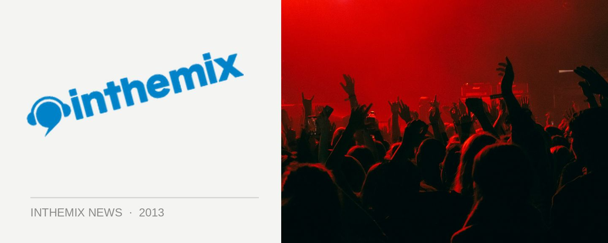

Tiefschwarz reflects on U.S. tour: "It's still building all the time"
Brothers Ali and Basti Schwarz, aka Tiefschwarz, have this week seen the release of their shiny new Renaissance: The Mix Collection double-disc mix. It’s seen the pair gigging all over the place; last weekend Ali played several gigs in the pair’s hometown of Berlin, while Basti has just returned from a U.S. tour, which was described to inthemix as a “really amazing time”. From his perspective, underground dance music is taking off like a rocket in North America at the moment.
“We’ve been playing in the States for more than ten years, but it’s still building all the time,” Ali told inthemix this week. “Things work differently in the States. Promoters work differently. It’s a different vibe, and a different work-flow. So it takes a while to adapt to everything, and get both sides at the same pace. But the scene is still constantly growing.”
Ali’s sentiments on the more commercial side of the EDM phenomenon were actually very positive. “I personally don’t enjoy the music, but it brings people closer to electronic culture in general,” he said. “Of course it’s very commercial, but it also opens up all these niches for the underground side of things. And it really does help. We’re looking forward to returning in Autumn.”
Otherwise, the Tiefschwarz brothers have had a consistent presence in underground house since the mid ‘90s, but they’re really noticing the ripples of change at the moment.
“You can see that it what’s happening in Ibiza right now. Big changes. Most of the big nights are run by really cool, credible artists, who stand for quality music. Whether it’s Guy Gerber or Solomun or Jamie Jones, it’s all about really good music. The more commercial side of the story is still there, but it’s increasingly left and right outside of the centre.”
Tiefschwarz’ Renaissance: The Mix Collection dropped on Monday, seeing the pair adopt the tried-and-tested format of both a downbeat and club mix over the two discs, and also taking a free and open approaching terms of experimenting across their mixes.
“The deeper mix was something more eclectic, and it gave us a lot of pleasure because it allows you to go a bit off-centre, where it’s more about atmosphere and just about peak-time delivery. And the club mix itself, while it has a few tracks that are happening right now, the kind of music everybody loves to hear in a club, at the same time we tried to find a few selections that were not so obvious. I think we can be quite happy with the result.”